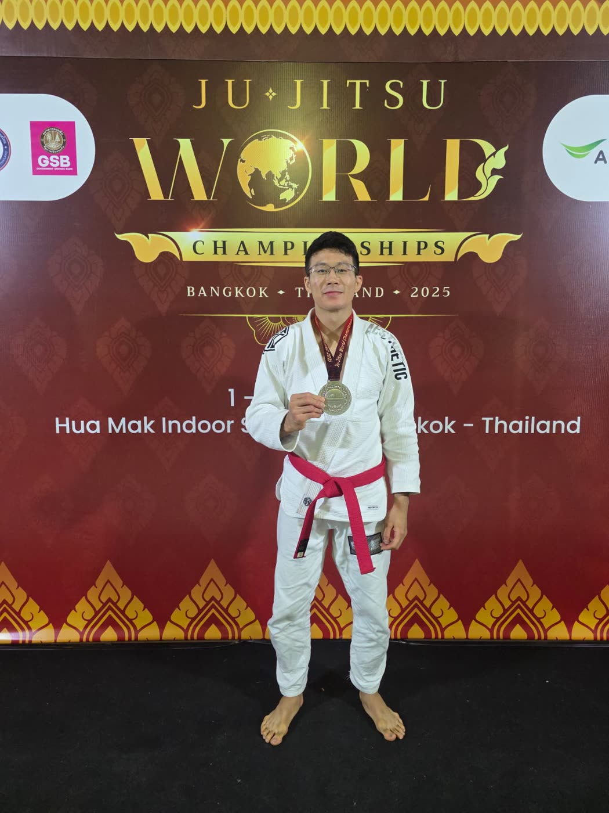
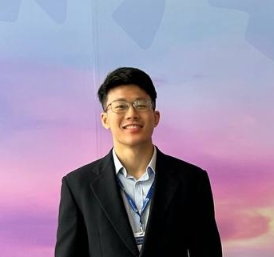
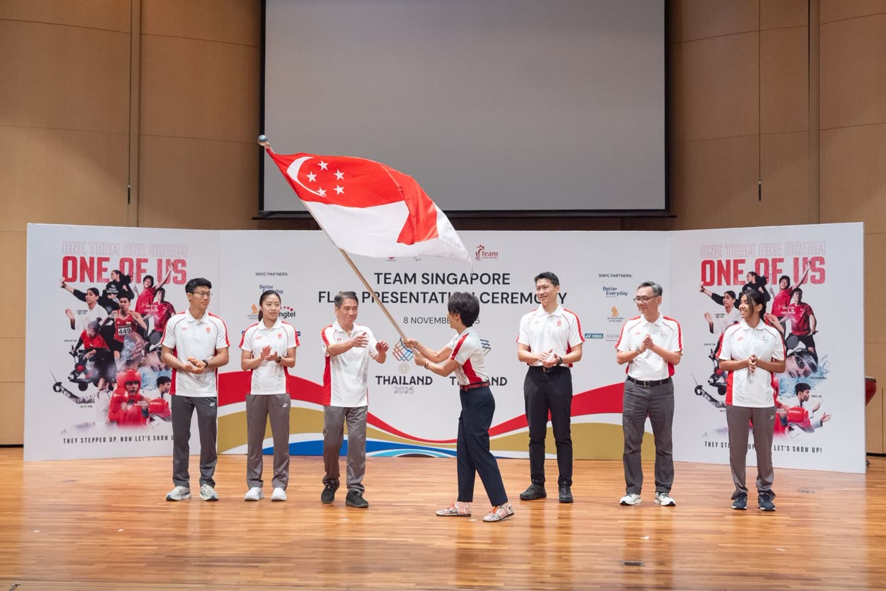
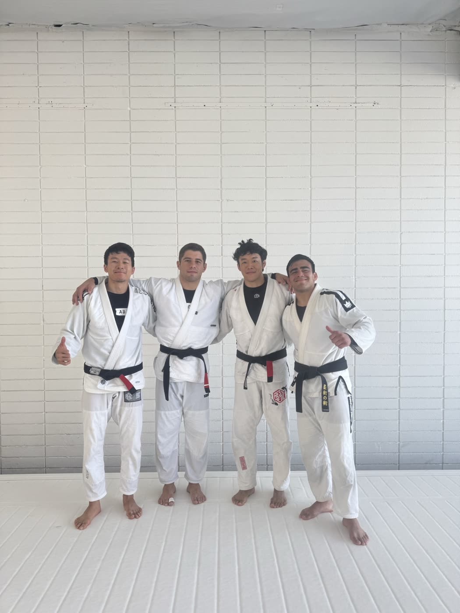

2022 – 2027Expected
Bachelor of Medicine and Bachelor of Surgery (MBBS)
Lee Kong Chian School of Medicine, Nanyang Technological University
- Dean’s List: M1 (2022–23), M2 (2023–24), M3 (2024–25)
Medicine · Ju-Jitsu · Singapore
Medical student at NTU’s Lee Kong Chian School of Medicine and national ju-jitsu athlete for Team Singapore.

Medical student and national jiu-jitsu athlete with an interest in the clinical applications of artificial intelligence. Passionate about helping patients regain function and return to active lifestyles, having experienced first-hand the physical and psychological impact of musculoskeletal conditions.

2022 – 2027Expected
Lee Kong Chian School of Medicine, Nanyang Technological University
2020
Anglo-Chinese School (Independent)
2021 – 2022
Singapore Civil Defence Force
| Year | Competition | Result |
|---|---|---|
| 2026 | Asian Games, Aichi-Nagoya | 5th · −69 kg |
| 2026 | Ju-Jitsu World Championships, Abu Dhabi | Silver · ne-waza −69 kg |
| 2025 | 33rd SEA Games, Thailand | Team Singapore flag bearer |
| 2025 | Ju-Jitsu World Championships, Bangkok | Silver · ne-waza −69 kg |
| 2023 | Asian Games, Hangzhou | 5th · −69 kg |
| 2023 | 32nd SEA Games, Phnom Penh | Gold · ne-waza −69 kg |
| 2022 | 31st SEA Games, Hanoi | Gold · −69 kg |
| 2019 | 30th SEA Games, Philippines | Gold · −62 kg |
| 2019 | World Pro Jiu-Jitsu Championship, Abu Dhabi | Juvenile champion |
| 2019–25 | Singapore National Jiu-Jitsu Championships | 1st place |


2024Presentation
Global Spine Conference 2024, Thailand
Publication
Publication
Annals of the Academy of Medicine, Singapore
“…grace is also found in victory, in how you win and what you say and how you behave after the yell of triumph and the clenched fist of glory.”
Featured in The Straits Times, CNA, Lianhe Zaobao, 8world and MONEY FM 89.3.
Nothing matches those filters yet.